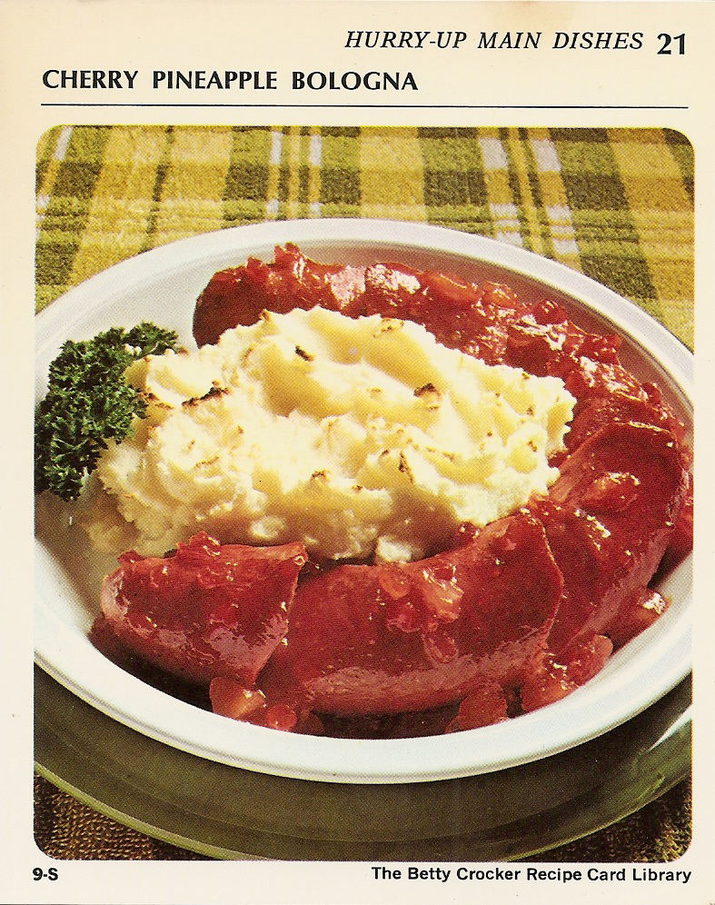

Back to Table of Content
Cherry Pineapple Bologna

Ingredients
- 1 pound ring bologna
- Cherry Pineapple Glaze (Below)
- Potato Buds instant puffs (enough for 4 servings)
- 1/2 cup crushed pineapple
- 1/4 cup coarsely chopped maraschino cherries
- 1/4 cup light corn syrup
- 2 tabelspoons white vinegar
- 1/4 teaspoon cloves
- 2 drops red food color
- 1 1/2 teaspoons water
- 1 1/2 teaspoons cornstarch
Preparation
regi
- If necessary remove casing from bologna arrange bologna in ungreased 9-inch pie pan.
- Cut ring diagonally at 2-inch intervals, being careful not to cut completely through.
- Separate cuts and spoon in part of glaze
- Spread remaining glaze on top.
- Heat oven to 400°.
- Prepare Potato Buds instant puffs as directed on package.
- Mound potatoes in center of ring.
- Bake 20 minutes or until potatoes are light brown. 4 servings.
Cherry Pineapple Glaze
- Heat pineapple, cherries, corn syrup,
vinegar, cloves and food color to boiling, stirring occasionally.
- Reduce heat; simmer 15 minutes.
- Blend water and cornstarch; stir into fruit.
- Boil and stir 1 minute.